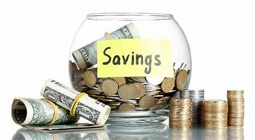

Comprehensive Guide to Saving Money for Personal Finance Management
Saving money is a fundamental aspect of personal finance management that can help you achieve financial stability, reach your goals, and prepare for unexpected expenses. This comprehensive guide will walk you through effective strategies for saving money, budgeting techniques, and how to integrate saving into your overall financial plan.
1. Understanding the Importance of Saving
Before diving into specific saving strategies, it's crucial to understand why saving money is so important:
- Financial Security: Savings provide a safety net for unexpected expenses or loss of income.
- Goal Achievement: Saving allows you to work towards significant financial goals like buying a home or retiring comfortably.
- Reduced Stress: Having savings can significantly reduce financial stress and improve overall well-being.
- Flexibility: Savings give you the freedom to make choices, such as changing careers or starting a business.
2. Setting Clear Savings Goals
Defining clear, specific savings goals is crucial for developing an effective saving strategy. Consider the following when setting your goals:
- Short-term goals: Objectives you want to achieve within the next 1-3 years (e.g., building an emergency fund, saving for a vacation)
- Medium-term goals: Objectives for the next 3-10 years (e.g., saving for a down payment on a house, starting a business)
- Long-term goals: Objectives that are more than 10 years away (e.g., saving for retirement, funding your children's education)
Your goals should be SMART: Specific, Measurable, Achievable, Relevant, and Time-bound. This approach will help you stay focused and motivated in your saving journey.
3. Creating a Budget
A budget is a fundamental tool for effective saving. Here's how to create and maintain a budget:
- Track Your Income: List all sources of income, including salary, freelance work, and investments.
- List Your Expenses: Record all your expenses, including fixed costs (rent, utilities) and variable expenses (groceries, entertainment).
- Categorize Expenses: Group your expenses into categories like housing, transportation, food, etc.
- Set Spending Limits: Allocate specific amounts to each category based on your income and priorities.
- Review and Adjust: Regularly review your budget and adjust as needed based on your changing circumstances and goals.
4. Implementing the 50/30/20 Rule
The 50/30/20 rule is a simple budgeting method that can help you balance necessary expenses, wants, and savings:
- 50% for Needs: Allocate half of your after-tax income to necessities like housing, food, utilities, and transportation.
- 30% for Wants: Use this portion for non-essential expenses like entertainment, dining out, and hobbies.
- 20% for Savings and Debt Repayment: Dedicate this part to saving for your goals and paying off any debts.
5. Strategies for Cutting Expenses
Reducing your expenses is a key part of increasing your savings. Here are some effective strategies:
- Track Your Spending: Use apps or spreadsheets to monitor where your money is going.
- Identify Unnecessary Expenses: Look for subscriptions or services you don't use or need.
- Reduce Housing Costs: Consider downsizing or finding a roommate to share expenses.
- Lower Utility Bills: Implement energy-saving measures and shop around for better rates.
- Cut Transportation Costs: Use public transit, carpool, or consider biking for short trips.
- Save on Food: Cook at home more often, meal plan, and use coupons or discounts.
- Negotiate Bills: Call service providers to see if you can get better rates.
6. Automating Your Savings
Automating your savings can help ensure you consistently save money without having to think about it:
- Set Up Automatic Transfers: Schedule regular transfers from your checking account to your savings account.
- Use Direct Deposit: Have a portion of your paycheck directly deposited into your savings account.
- Round-Up Apps: Use apps that round up your purchases and save the difference.
- 401(k) Contributions: If available, set up automatic contributions to your employer-sponsored retirement plan.
7. Building an Emergency Fund
An emergency fund is a crucial component of financial security. Here's how to build one:
- Set a Goal: Aim for 3-6 months of living expenses.
- Start Small: Begin with a goal of $500 or $1,000, then build from there.
- Make it a Priority: Treat your emergency fund contribution like a bill payment.
- Keep it Accessible: Use a high-yield savings account for easy access when needed.
- Replenish After Use: If you need to use your emergency fund, make it a priority to build it back up.
8. Saving for Specific Goals
Different savings goals may require different strategies:
- Retirement Savings: Maximize contributions to tax-advantaged accounts like 401(k)s and IRAs.
- Home Down Payment: Consider high-yield savings accounts or CDs for shorter-term goals.
- Education Savings: Look into 529 plans or education savings accounts for tax benefits.
- Travel or Large Purchases: Set up separate savings accounts for each goal to track progress.
9. Increasing Your Income to Boost Savings
While cutting expenses is important, increasing your income can significantly boost your saving potential:
- Ask for a Raise: If you've been performing well at work, consider negotiating a salary increase.
- Start a Side Hustle: Use your skills to earn extra income through freelancing or part-time work.
- Sell Unused Items: Declutter and sell items you no longer need.
- Invest in Your Skills: Improve your marketability and earning potential through education or certifications.
- Rent Out Space: If you have extra space, consider renting it out on platforms like Airbnb.
10. Using Technology to Support Your Savings Goals
Leverage technology to make saving easier and more effective:
- Budgeting Apps: Use apps like Mint, YNAB, or Personal Capital to track expenses and monitor your budget.
- Savings Apps: Apps like Acorns or Digit can help you save small amounts automatically.
- Bank Alerts: Set up alerts for low balances or large purchases to stay on top of your spending.
- Comparison Websites: Use sites to compare prices on everything from groceries to insurance.
11. Avoiding Common Saving Pitfalls
Be aware of these common mistakes that can derail your saving efforts:
- Lifestyle Inflation: Avoid increasing your spending as your income increases.
- Ignoring Small Expenses: Don't underestimate the impact of small, regular purchases.
- Not Having a Plan: Saving without specific goals can lead to lack of motivation.
- Keeping Savings Too Accessible: Consider separating your savings from your everyday spending money.
- Neglecting to Adjust: Regularly review and adjust your saving strategy as your circumstances change.
Conclusion
Saving money is a crucial component of sound personal finance management. By understanding the importance of saving, setting clear goals, creating and sticking to a budget, and implementing various saving strategies, you can work towards financial security and achieve your financial objectives. Remember, saving is a lifelong habit that requires patience, discipline, and consistency. Start where you are, use what you have, and do what you can. Every small step towards saving can make a significant difference in your financial future.